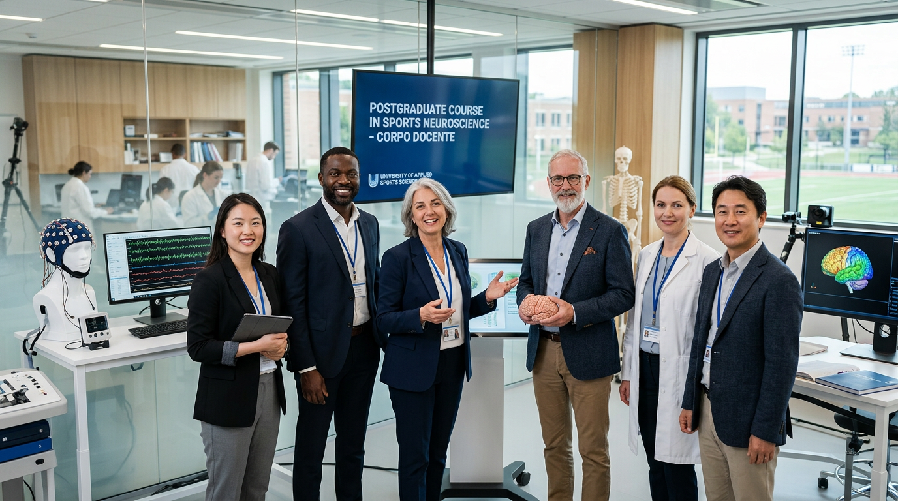
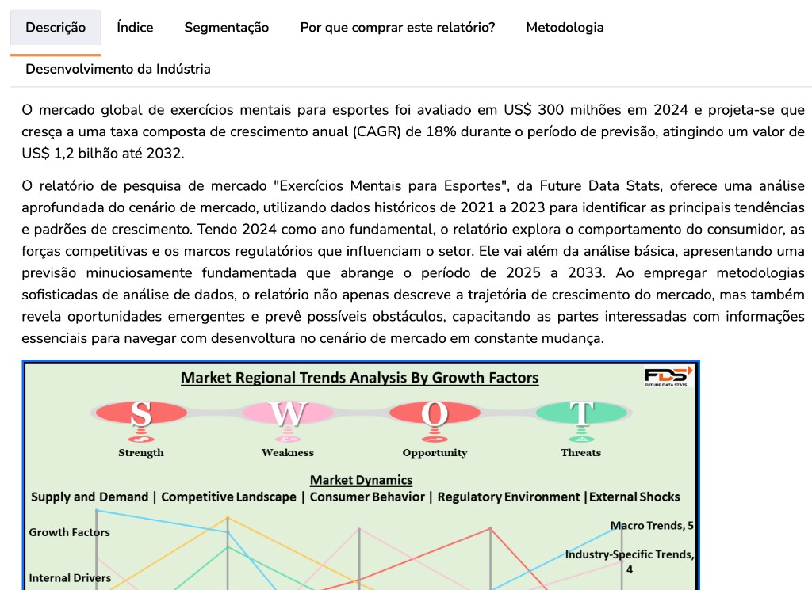
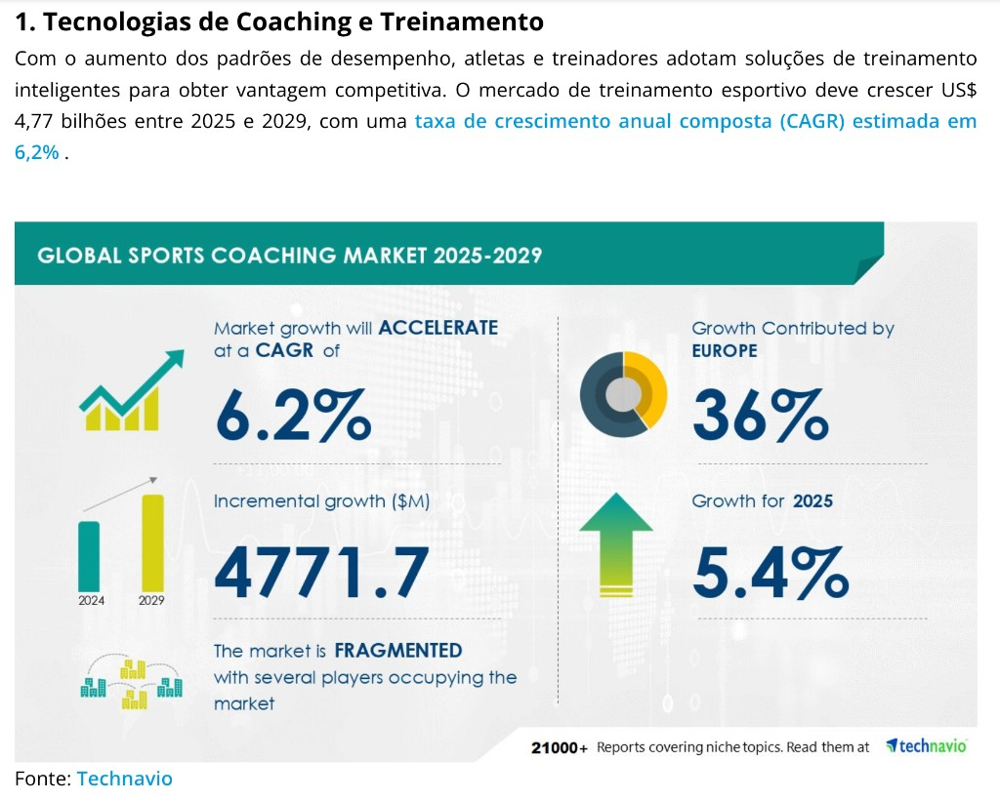

Material institucional · Ementa completa · Instituto Atleta Campeão + UNIFATEC
Para gerar PDF: Ctrl+P (ou Cmd+P) → Salvar como PDF · Papel A4
Credenciamento MEC · Diploma com validade nacional
Pós-Graduação em Neurociência e Treinamento Mental Aplicada ao Esporte
Especialização lato sensu com base científica, ferramentas aplicáveis na semana seguinte e eixo de posicionamento profissional.
Curso credenciado com diploma emitido pela UNIFATEC, em projeto pedagógico desenvolvido em parceria com o Instituto Atleta Campeão.

Formação com quem atua em universidade, clubes e alta performance — ciência e experiência no mesmo lugar.
360hCarga horária
18 mesesDuração prevista
18 módulosGrade completa
100% onlinePara quem já atua
Parceria acadêmica: a UNIFATEC (instituição mantenedora, com registro e reconhecimento no âmbito do MEC) credencia a pós-graduação;
o Instituto Atleta Campeão estrutura a metodologia, a comunidade e a aplicação prática voltada ao ecossistema esportivo brasileiro.
A nota institucional utilizada em materiais oficiais da parceria é 4 de 5 no MEC (conforme divulgação da própria formação).
Visão geral
Neurociência e treinamento mental: do laboratório ao vestiário
Esta pós foi desenhada para que você sinta o ritmo de uma formação séria: primeiro a base (o que medir, como falar, como integrar staff e família),
depois a neurociência aplicada (sono, decisão, telas, fadiga mental, cognição) e, por fim, a tradução em rotina de atleta, palestras e autoridade de mercado.
Cada módulo combina leitura, reflexão e cenários reais — para que, ao concluir, você não apenas “tenha visto aulas”, mas reconheça
onde entra cada ferramenta na semana seguinte, com diploma reconhecido pelo MEC (UNIFATEC) e método do Instituto Atleta Campeão.
O mercado esportivo já separa quem improvisa de quem entrega protocolo. Aqui você constrói repertório científico, linguagem profissional e posicionamento —
o trio que sustenta preço, contratos e confiança em clubes, consultorias e educação.
Sua jornada nos 18 meses (como você vai viver o curso)
Quatro momentos — cada um com sensação clara de progressão, como em uma temporada bem planejada.
01 · Meses 1–5
Fundamentos e linguagem
Você padroniza conceitos, aprende a conversar com técnico e família e instala hábito de observação — menos achismo, mais método.
02 · Meses 5–12
Neurociência na prática
Sono, estresse, telas, cognição e decisão entram no seu playbook. Você enxerga o atleta como sistema — corpo, cérebro e contexto.
03 · Meses 12–16
Consolidação com o atleta
Rotina semanal, pré/pós-competição e coach profissional: é onde o treino mental vira rotina aderente, não discurso motivacional.
04 · Reta final
Palco e autoridade
Palestras, workshops e posicionamento: você aprende a comunicar valor em salas de clube e no digital — com ética e clareza.
A questão não é se o esporte vai exigir mais ciência mental e neurociência aplicada.
A questão é: você vai crescer junto com esse movimento?
18%
Crescimento anual do mercado global de treinamento mental esportivo — demanda puxada por clubes e atletas que usam neurociência para performance.
Fonte: Future Data Stats
90%
Dos times de elite em mercados maduros já investem em estruturas de psicologia do esporte e gestão mental de elenco.
Fonte: Technavio (mercado global de coaching e treinamento esportivo)
2025
O recrutamento para especialistas com pós em neurociência/psicologia do esporte se intensificou — formação virou critério em vagas de ponta.
Fonte: tendência citada em materiais da própria formação (LinkedIn / mercado)
Fontes — trechos de relatórios de mercado

Future Data Stats — crescimento e projeções do segmento.Allied Market Research — tamanho do mercado global de treinamento esportivo.

Technavio — adoção de coaching e tecnologias em times de elite.
Autoridade da instituição e da parceria
A credibilidade desta formação vem da combinação entre estrutura universitária (registro do diploma, carga horária, PPC)
e marca de referência no treinamento mental esportivo no Brasil, com método, comunidade e atuação contínua no campo.
Instituto Atleta Campeão
Fundado em 2016 nos Estados Unidos e expandido para o Brasil em 2017, consolidou-se como referência em
neurociência e treinamento mental aplicados ao esporte. Em 2023, lançou a primeira turma da pós-graduação em parceria com a UNIFATEC —
com ampla adesão na estreia (mais de 300 alunos na primeira turma, conforme materiais oficiais).
+30 milAtletas impactados (alcance divulgado pela marca)
+400Alunos na pós-graduação (comunidade da formação)
+20 anosExperiência agregada do time no mercado esportivo
MECDiploma com validade nacional (UNIFATEC)
Por que isso importa para o aluno
Respaldo formal: certificação de especialização, não apenas curso avulso.
Rede real: docentes e comunidade conectados a clubes, seleções e alta performance.
Atualização: grade que integra neurociência, cognição, sono, telas, fadiga mental e negócio.
Continuidade: acesso estendido ao conteúdo e encontros de mentoria (conforme regulamento do curso).
Números de alcance e turmas referem-se a divulgações institucionais; podem ser atualizados em novas edições deste PDF.
Para conferência de credenciamento, utilize os canais oficiais do MEC e da mantenedora.
Sumário
Identificação e objetivos gerais
Denominação: Pós-Graduação lato sensu em Neurociência e Treinamento Mental Aplicada ao Esporte.
Carga horária: 360 horas · Duração prevista: 18 meses · Modalidade: educação a distância.
O programa forma profissionais para intervir com método e evidência na interface entre mente, cérebro e performance:
da preparação da temporada ao momento decisivo, passando por sono, atenção, decisão sob pressão, uso de telas, fadiga mental e comunicação com equipes e famílias.
Competências esperadas do egresso
Articular linguagem de neurociência e de treinamento mental sem simplificação irresponsável nem jargão inacessível;
Selecionar e adaptar protocolos para contextos reais (individual, equipe, categorias de base, pais);
Reconhecer limites de atuação profissional e integrar rede (saúde, técnico, clube);
Medir esforço e evolução com critérios claros (comportamentais, cognitivos e de rotina);
Comunicar valor em ambientes institucionais (palestras, clubes, consultoria) com autoridade técnica.
Público-alvo e pré-requisitos
Profissionais com graduação completa (requisito conforme regulamento da mantenedora) que atuem ou desejem atuar com esporte e performance:
educação física, psicologia, treinadores, coaches, profissionais de saúde e educadores que apoiam atletas em desenvolvimento.
Organização em três fases
A progressão do curso organiza o aprendizado em três eixos cumulativos — do fundamento científico à autoridade profissional.
Fase 1 — Repertório científico e linguagem comum: módulos 01 a 06 (bases do treinamento mental, grupo, fisiologia aplicada, família, psicologia, introdução à neurociência).
Fase 2 — Neurociência e ferramentas na prática: módulos 07 a 15 (sono, aplicação ao esporte, estimulação não invasiva, fadiga mental, pré/pós-competição, telas, cognição, coach).
Fase 3 — Consolidação e posicionamento: módulos 16 a 18 (rotina do atleta, palestras e workshops, autoridade de mercado).
Ementa detalhada · módulo a módulo
A seguir, a descrição completa de cada unidade curricular: contexto, foco e tópicos centrais.
01
Fase 1 · Fundamentos
Princípios Básicos
Módulo introdutório que estabelece uma gramática comum do treinamento mental: o que é (e o que não é), como se diferencia de improviso motivacional
e quais critérios tornam uma intervenção replicável e ética no esporte.
Conteúdos e tópicos
Definição operacional de treinamento mental e papel do profissional no ecossistema (técnico, saúde, família);
Modelos simples de demanda psicológica na performance (carga mental, atenção, confiança);
Introdução a rotinas de observação: como registrar comportamentos e respostas sob pressão;
Ética e limites: quando encaminhar, como comunicar com transparência;
Alinhamento de expectativas com atleta e staff: contrato psicológico e plano de intervenção inicial.
02
Fase 1 · Fundamentos
Grupos e Equipes
Foco em dinâmicas de equipe: coesão, papéis, comunicação sob estresse e resiliência coletiva. Prepara para ambientes onde o resultado depende da sincronia entre pessoas.
Conteúdos e tópicos
Formação e manutenção de coesão: fatores psicológicos e situacionais;
Liderança no esporte coletivo: estilos, feedback e conflitos;
Pressão de resultado e “culpa” individual vs responsabilidade compartilhada;
Dinâmicas de grupo aplicáveis (segurança psicológica, metas coletivas, rituais de equipe);
Planejamento de intervenções breves em semana de jogos e rivalidade.
03
Fase 1 · Fundamentos
Fisiologia do Treinamento
Integra carga física e estado mental: como periodização, fadiga e recuperação alteram atenção, humor e tomada de decisão — linguagem compartilhada com preparadores físicos.
Conteúdos e tópicos
Princípios de estresse e adaptação: relação entre treino, sono e disponibilidade cognitiva;
Sobrecarga: sinais comportamentais e cognitivos antes dos sinais puramente físicos;
Integração staff-técnico: como traduzir “cansou” em hipóteses ajustáveis no plano;
Microciclos e competição: prioridades mentais por fase da temporada;
Bases para conversar com profissionais da saúde e performance sem reducionismo.
04
Fase 1 · Fundamentos
O Jovem e o Contexto da Família
Aborda o sistema familiar como variável de desenvolvimento: expectativas, ansiedade parental, comunicação e alinhamento com staff — essencial em categorias de base.
Conteúdos e tópicos
Desenvolvimento no esporte: pressão saudável vs pressão tóxica;
Protocolos de conversa com pais: escuta, limites e combinados realistas;
Papel da família na rotina de sono, telas e organização do dia a dia;
Conflitos frequentes (comparação, especialização precoce, culpa) e mediação;
Rede de apoio: quando envolver psicologia clínica ou escola.
05
Fase 1 · Fundamentos
Psicologia
Consolida bases psicológicas aplicadas ao esporte de alto rendimento: motivação, emoção, aprendizado e modelos de intervenção compatíveis com evidência.
Conteúdos e tópicos
Principais abordagens úteis ao contexto esportivo (foco em aplicação, não em debate escolar);
Ansiedade, humor e autoconfiança: leitura de sinais e primeiras estratégias;
Metas, feedback e reforço: como construir sistemas de melhoria contínua;
Relação terapêutica / relação de treino: papéis e encaminhamentos;
Ética profissional e sigilo no ambiente esportivo.
06
Fase 1 · Fundamentos
Introdução à Neurociência
Panorama dos fundamentos neurofisiológicos para aplicar neurociência com responsabilidade: neurônios, plasticidade, controle motor e bases da atenção — ponte para os módulos seguintes.
Conteúdos e tópicos
Como o cérebro processa informação e organiza o movimento em contexto esportivo;
Neurônios, sinapses e neurotransmissores: implicações para foco, motivação e aprendizagem;
Aprendizagem motora e memória: repetição, variabilidade e transferência;
Introdução a circuitos relevantes (sistemas de atenção e controle executivo) em linguagem acessível;
Leitura crítica de “neuromitos” e divulgação sensacionalista no esporte.
07
Fase 2 · Neurociência aplicada
Neurociência do Sono
O sono como alavanca de performance: consolidação de memória, recuperação, regulação emocional e ritmos circadianos — com implicações diretas em treino e competição.
Conteúdos e tópicos
Estágios do sono e papel na memória procedural e regeneração;
Ritmos circadianos: janelas de treino, viagens e competições em fusos diferentes;
Distúrbios comuns em atletas: sinais de alerta e encaminhamento;
Higiene do sono: ambiente, rotina, luz e tecnologia;
Protocolos práticos e estudos de caso em alto rendimento.
08
Fase 2 · Neurociência aplicada
Neurociência Aplicada ao Esporte
Traduz neurociência para situações de jogo: pressão, medo, erro, derrota e reabilitação da confiança — com foco em circuitos de ameaça, regulação emocional e funções executivas.
Conteúdos e tópicos
Medo de falhar e antecipação de ameaça: impacto na atenção e no movimento;
Funções executivas no esporte: inibição, flexibilidade cognitiva e controle atencional;
Reaprendizagem após falha: como estruturar retorno seguro à competição;
Integração mente–corpo em momentos decisivos (rotinas, gatilhos, âncoras);
Estudos de caso e leitura de cenários (individual vs coletivo).
09
Fase 2 · Neurociência aplicada
Estimulação Não Invasiva
Visão crítica e aplicada de técnicas de neuromodulação não invasiva discutidas no esporte: o que é, para que serve, evidências, limitações e ética — sem promessas milagrosas.
Conteúdos e tópicos
Introdução à estimulação cerebral não invasiva no contexto de performance;
Panorama de modalidades (ex.: tDCS, tACS, tRNS, rTMS) com linguagem técnica acessível;
Efeitos esperados, heterogeneidade individual e estado da literatura;
Protocolos citados na pesquisa e cuidados de segurança;
Ética, contraindicações e papel do profissional (não médico): integração com equipe de saúde.
10
Fase 2 · Neurociência aplicada
Fadiga Mental
Aprofunda fadiga mental vs fadiga física: sobrecarga cognitiva, queda de decisão, tempo de reação e estratégias de recuperação e prevenção na temporada.
Conteúdos e tópicos
Definições e marcadores comportamentais da fadiga mental no esporte;
Efeitos da sobrecarga cognitiva em atenção e execução técnica;
Interação com sono, estresse e carga de informação (vídeo, análise tática);
Estratégias de recuperação cognitiva e microdescansos;
Planejamento: equilíbrio entre carga física, emocional e mental no microciclo.
11
Fase 2 · Neurociência aplicada
Treinamento Mental Pré e Pós Competição
Protocolos para a véspera, o dia do evento e o processamento pós-prova: ansiedade, insônia, foco, rotina de aquecimento mental e manejo de derrota sem destruir confiança.
Conteúdos e tópicos
Rotinas pré-competição: visualização, respiração, autodiálogo e âncoras;
Regulação fisiológica (ativação vs excesso de tensão);
Plano B mental para imprevistos (clima, arbitragem, adversário);
Pós-competição: análise produtiva vs autocrítica destrutiva;
Integração com staff técnico para consistência de mensagens.
12
Fase 2 · Neurociência aplicada
Tempo de Telas e Performance
Impacto do estímulo digital em dopamina, atenção, sono e recuperação — com protocolos de higiene digital e envolvimento de pais e treinadores na mudança de hábitos.
Conteúdos e tópicos
Bases neurocientíficas do uso de telas e recompensa;
Efeitos no foco, sono e humor: leitura para diferentes idades;
Evidências e estudos de caso com atletas de base e alto rendimento;
Estratégias práticas: limites, substituição, rotinas e ambiente;
Comunicação com famílias: reduzir culpa e aumentar adesão.
13
Fase 2 · Cognição e decisão
Perceptivo Cognitivas
Habilidades perceptivo-cognitivas que decidem performance: atenção, memória de trabalho, antecipação e tomada de decisão em esportes coletivos, individuais e de alto risco.
Conteúdos e tópicos
Modelos de atenção e leitura de jogo;
Memória de trabalho sob pressão e carga de informação;
Antecipação e tomada de decisão: treino deliberado vs repetição vazia;
Estudos de caso por modalidade;
Integração com preparo físico e técnico sem duplicar esforço.
14
Fase 2 · Cognição e decisão
Treinamento Cognitivo
Ferramentas de treino cognitivo fora e dentro do campo: softwares, simulações, vídeo e realidade virtual quando aplicável — com foco em transferência para o jogo real.
Conteúdos e tópicos
Princípios de design de treino cognitivo (carga, progressão, feedback);
Exercícios para tempo de reação, controle inibitório e flexibilidade cognitiva;
Uso de tecnologia com critério (o que mede, o que não mede);
Reabilitação e retorno ao esporte: progressão cognitiva segura;
Pré-temporada e microciclos: onde encaixar o cognitivo na semana.
15
Fase 2 · Cognição e decisão
Coach Esportivo
O papel do coach como facilitador de mudança: contratos claros, perguntas poderosas, plano de sessões e integração com objetivos esportivos — método em primeiro lugar.
Conteúdos e tópicos
Frameworks de sessão e acompanhamento (objetivos, métricas, revisão);
Comunicação e escuta ativa com atletas de perfis diferentes;
Integração com equipe técnica: limites e complementaridades;
Ferramentas de ancoragem de hábitos e responsabilização saudável;
Ética e marketing responsável na divulgação do trabalho.
16
Fase 3 · Prática e carreira
Treinamento Mental na Rotina do Atleta
Consolida ferramentas diárias sustentáveis: visualização, respiração, autodiálogo, diário, rotinas pré-treino e pós-treino — com adaptação por idade e nível competitivo.
Conteúdos e tópicos
Design de rotinas curtas com alta adesão (microhábitos);
Visualização multimodal e especificidade por modalidade;
Regulação emocional no dia a dia (não só na competição);
Integração com calendário esportivo (escola, trabalho, viagens);
Ajuste fino: quando simplificar e quando aprofundar.
17
Fase 3 · Prática e carreira
Como Criar Palestras e Workshops
Estrutura para ensinar quem ensina: desenho de palestras para clubes, escolas e empresas, com roteiros, slides, dinâmicas e adaptação de público (atletas, pais, staff).
Conteúdos e tópicos
Arquitetura da apresentação: problema → ciência → ferramenta → plano de ação;
Modelos editáveis por tema (base, alto rendimento, famílias);
Logística e segurança em grupo (participação, gatilhos emocionais);
Como transformar palestra em acompanhamento ou venda ética de serviço;
Bibliografia e linguagem adequada a cada leigo.
18
Fase 3 · Prática e carreira
Posicionamento e Autoridade
Fecha o ciclo com estratégia de carreira: posicionamento, prova social legítima, comunicação digital, captação de clientes e construção de reputação técnica no longo prazo.
Conteúdos e tópicos
Proposta de valor nítida (para quem você é inevitável?);
Autoridade baseada em método, casos e transparência;
Marketing ético para profissionais da saúde e do esporte;
Precificação e pacotes alinhados à formação;
Plano de 90 dias pós-formação: conteúdo, parcerias e métricas.
Tabela de referência rápida
#
Módulo
Fase
01
Princípios Básicos
1
02
Grupos e Equipes
1
03
Fisiologia do Treinamento
1
04
O Jovem e o Contexto da Família
1
05
Psicologia
1
06
Introdução à Neurociência
1
07
Neurociência do Sono
2
08
Neurociência Aplicada ao Esporte
2
09
Estimulação Não Invasiva
2
10
Fadiga Mental
2
11
Treinamento Mental Pré e Pós Competição
2
12
Tempo de Telas e Performance
2
13
Perceptivo Cognitivas
2
14
Treinamento Cognitivo
2
15
Coach Esportivo
2
16
Treinamento Mental na Rotina do Atleta
3
17
Como Criar Palestras e Workshops
3
18
Posicionamento e Autoridade
3
Metodologia e acompanhamento
A formação é online, com organização modular e ritmo compatível com profissionais em atividade. Entre os pilares divulgados pela pós estão:
tutoria periódica em grupo, encontros de mentoria em videoconferência, comunidade para troca com pares e prazo estendido de acesso ao conteúdo para revisão.
A frequência exata de encontros ao vivo, critérios de avaliação e TCC/regulamento acadêmico seguem o documento oficial entregue ao aluno matriculado na UNIFATEC.
Certificação
O diploma de Pós-Graduação lato sensu é emitido pela UNIFATEC, com registro conforme exigências da educação superior brasileira e validade nacional.
O Instituto Atleta Campeão participa como parceiro de metodologia e ecossistema profissional vinculado ao projeto do curso.
Corpo docente
Quem ensina não está só na universidade: está em campo, em seleções e no mercado. A fotografia reúne parte do time; abaixo, os nomes e a trajetória de cada docente.
Mestres e doutores · Pesquisa aplicada e alta performance
FC
Dr. Fábio CeschiniDoutor em Fisiologia do Exercício · Coordenação acadêmica do curso.
MR
Mayra RamosFundadora do Instituto Atleta Campeão; referência em treinamento mental e neurociência aplicada ao esporte no Brasil.
Prof. Dr. Leonardo FortesPsicologia e ciências do esporte (UFMG, CNPq, GENEXDES); docência e pesquisa com trajetória internacional.
AS
Dr. Antônio SereniniDoutor em Psicologia; experiência em alta performance e contextos de seleções.
FM
Flávio MarretiTreinador mental; aprofundamento em neurociências e performance.
MZ
Dr. Marcelo Callegari ZanettiDoutor em desenvolvimento humano e tecnologias; visão interdisciplinar.
PR
Prof. Pablo RosaPsicólogo do esporte; ênfase em neurociência e treinamento cognitivo.
LC
Lucas CruzEstratégia digital, inteligência artificial aplicada e posicionamento de conteúdo para profissionais da área.
A escalação por turma pode incluir docentes convidados adicionais, preservando o perfil e os objetivos do programa. Fotos individuais serão incluídas conforme disponibilizadas pela coordenação.